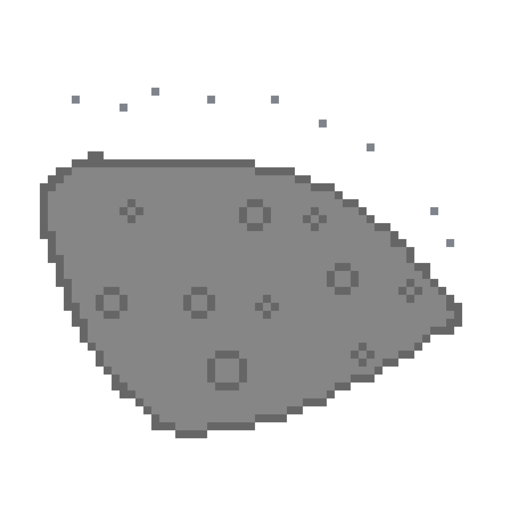

WD-1145+017b

Scientific Stats:
Star: WD-1145+017b
Planet Type: Asteroid
Mass: 9.1 × 10¹⁹ tons
Surface Temperature: 3,727 ºC
Orbital Period: 4.5 Hours
Distance from star: 0.003 AU
Discovery Date: 10/21/2015
Everyday Stats:
The star that WD-1145+017b orbits is WD-1145+017
WD-1145+017b's planet type is a asteriod
WD-1145+017b's mass is about one-tenth Cereses
The surface temperature of WD-1145+017b is about 0.7 times of the Sun's surface temperature
In the time that WD-1145+017b completes a full revolution around it's star, you have slept around 14 hours
The distance between WD-1145+017b and its star is around the surface area of South Africa
The date of discovery for WD-1145+017b is October 21st, 2015
The method used for the discovery of WD-1145+017b is Transit Photometry